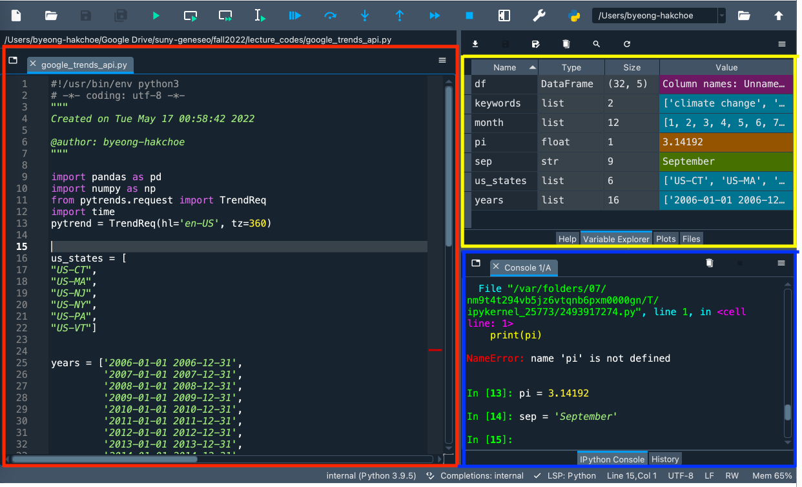
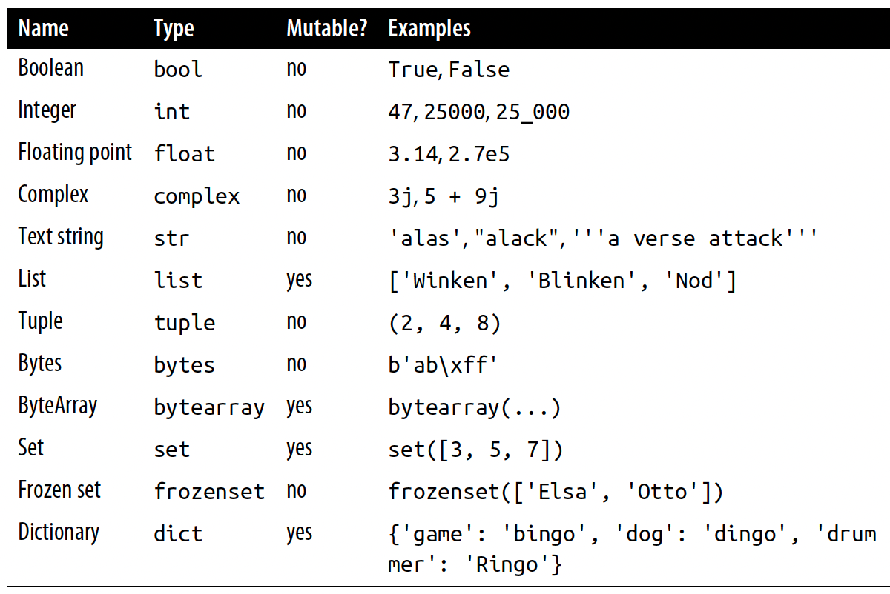

| Week | Contents | HW |
|---|---|---|
| 1 | Syllabus, Python & Pandas Basics | 1 |
| 2 | Pandas Basics | 1 |
| 3 | Data Visualization with matplotlib and seaborn | 1 |
| 4 | Tidy Data | 2 |
| 4 | Apply Functions | 2 |
Lecture 1
Syllabus, Course Outline, Etc.
Instructor
Instructor
Current Appointment & Education
Name: Byeong-Hak Choe.
Assistant Professor of Data Analytics and Economics at School of Business at SUNY Geneseo.
Ph.D. in Economics from University of Wyoming.
M.S. in Economics from Arizona State University.
M.A. in Economics from SUNY Stony Brook.
B.A. in Economics & B.S. in Applied Mathematics from Hanyang University at Ansan, South Korea
- Minor in Business Administration.
- Concentration in Finance.
Instructor
Data Science and Climate Change
Choe, B.H., 2021. “Social Media Campaigns, Lobbying and Legislation: Evidence from #climatechange/#globalwarming and Energy Lobbies.”
Question: To what extent do social media campaigns compete with fossil fuel lobbying on climate change legislation?
Data include:
- 5.0 million tweets with #climatechange/#globalwarming around the globe;
- 12.0 million retweets/likes to those tweets;
- 0.8 million Twitter users who wrote those tweets;
- 1.4 million Twitter users who retweeted or liked those tweets;
- 0.3 million US Twitter users with their location at a city level;
- Firm-level lobbying data (expenses, targeted bills, etc.).
Syllabus
Syllabus
Email, Class & Office Hours
Email: bchoe@geneseo.edu
Class Homepage:
Office: South Hall 301B.
Office Hours:
- Mondays 12:30 P.M.-1:30 P.M.
- Wednesdays 12:30 P.M.-2:30 P.M.
Syllabus
Course Prerequisites
- Business & Economics Statistics or Equivalent:
- Economics 205, Geography 278, Mathematics 242, Mathematics 262, Political Science 251, Psychology 250, or Sociology 211.
- Programming for Data Analytics:
- Data Analytics 100.
Syllabus
Textbooks
- Python for Data Analysis by Wes McKinney
- A free online version of this book is available at https://wesmckinney.com/book/.
- Python Data Science Handbook by Jake VanderPlas
- A free online version of this book is available at https://jakevdp.github.io/PythonDataScienceHandbook/
Syllabus
Reference Materials
- Coding for Economists by Arthur Turrell
- A free online version of this book is available at https://aeturrell.github.io/coding-for-economists/.
- QuantEcon DataScience - pandas by Chase Coleman, Spencer Lyon, and Jesse Perla
- A free online version of this book is available at ttps://datascience.quantecon.org/pandas/index.html
Syllabus
Course Description
This course aims to provide overview of how one can collect, manipulate, process, clean, and crunch datasets with hands-on and practical case studies.
This course will cover topics such as (1) loading, cleaning, transforming, merging, and reshaping data, (2) creating informative visualizations (3) dataset slicing, dicing, and summarizing, and (4) collecting data using web scrapping, API, and SQL.
We will cover these topics to solve real-world data analysis problems with thorough, detailed examples.
During the course, you will work hands-on with the Python programming language and its associated data analysis libraries.
Syllabus
Course Requirements
Laptop: You should bring your own laptop (Mac or Windows) to the classroom.
- It is recommended to have 2+ core CPU, 4+ GB RAM, and 500+ GB disk storage in your laptop for this course.
Homework: There will be six homework assignments.
Exams: There will be midterm and final exams.
- The final exam is comprehensive.
Syllabus
Course Contents
There will be tentatively 28 class sessions:
- 27 lectures;
- 1 midterm exam.
There will be no class on February 28, 2023.
The midterm exam will be tentatively scheduled on March 9, 2023.
The final exam will be tentatively scheduled on May 16, 2023, from noon to 2 P.M.
Syllabus
Course Contents
- Basics in pandas
Syllabus
Course Contents
- Data Transformation
| Lecture | Contents | HW |
|---|---|---|
| 5 | Relational Data | 2 |
| 6--7 | Duplicate Data & Groupby Operations | 2 |
| 7 | Midterm Exam |
Syllabus
Course Contents
- Data Type
| Lecture | Contents | HW |
|---|---|---|
| 8 | Missing Data | 3 |
| 8 | Data Types | 3 |
| 9 | String Data | 3 |
| 9 | Dates and Times Data | 3 |
Syllabus
Course Contents
- Web Scrapping and Databases
| Lecture | Contents | HW |
|---|---|---|
| 10--12 | Web Scrapping with Python selenium | 4--5 |
| 13 | Data Collection with APIs | 5 |
| 14--15 | Databases with SQL and Google BigQuery | 6 |
Syllabus
Attendance
You are allowed up to 7 absences without penalty.
There will be no additional absences available for standard excused reasons (illness, family emergency, transportation problems, etc.).
Syllabus
Grading
Attendance accounts for 5% of the total percentage grade.
Project accounts for 10% of the total percentage grade.
Homework assignments account for 25% of the total percentage grade.
Exams account for 60% of the total percentage grade.
\[ \begin{align} &\;(\text{Total Percentage Grade}) \notag\\ =&\quad 0.05\times(\text{Attendance Score}) \notag\\ &\,+\, 0.35\times(\text{Total Homework Score}) \,+\, 0.60\times(\text{Total Exam Score}).\notag \end{align} \]
Syllabus
Grading
The lowest homework score will be dropped when calculating the total homework score.
Each of the four homework accounts for 20% of the total homework score.
Syllabus
Grading
- The total exam score is the maximum between the following two average scores:
- the simple average of two exam scores;
- the weighted average of them with one-fourth weight on the midterm exam score and three-fourth weight on the final exam score.
\[ \begin{align} &(\text{Total Exam Score}) \notag\\ =\; &\max\,\left\{0.5\times(\text{Midterm Exam Score}) \,+\, 0.5\times(\text{Final Exam Score})\right.,\notag\\ &\qquad\;\,\left.0.25\times(\text{Midterm Exam Score}) \,+\, 0.75\times(\text{Final Exam Score})\right\}.\notag \end{align} \]
Syllabus
Grading
- Letter grades will be determined by the total percentage grade:
\[ \begin{align*} \! 100\; \geq\; A\;\;\, \geq \;93>\; A- \geq 90;\\ 90 >\; B+ \geq 87\; >\; B\;\;\, \geq \;83 >\; B- \geq 80;\\ 80 >\; C+ \geq 77\; >\; C\;\;\, \geq \;73 >\; C- \geq 70;\\ 70\; >\; D\;\;\, \geq\; 60 >\; E.\qquad\quad\; \end{align*} \]
Syllabus
Make-up exams
Make-up exams will not be given unless you have either a medically verified excuse or an absence excused by the University.
If you cannot take exams because of religious obligations, notify me by email at least two weeks in advance so that an alternative exam time may be set.
A missed exam without an excused absence earns a grade of zero.
Syllabus
Academic Integrity and Plagiarism
All homework assignments and exams must be the original work by you.
Examples of academic dishonesty include:
- representing the work, thoughts, and ideas of another person as your own
- allowing others to represent your work, thoughts, or ideas as theirs, and
- being complicit in academic dishonesty by suspecting or knowing of it and not taking action.
Geneseo’s Library offers frequent workshops to help you understand how to paraphrase, quote, and cite outside sources properly.
Syllabus
Accessibility
The Office of Accessibility will coordinate reasonable accommodations for persons with physical, emotional, or cognitive disabilities to ensure equal access to academic programs, activities, and services at Geneseo.
Please contact me and the Office of Accessibility Services for questions related to access and accommodations.
Syllabus
Well-being
You are strongly encouraged to communicate your needs to faculty and staff and seek support if you are experiencing unmanageable stress or are having difficulties with daily functioning.
Liz Felski, the School of Business Student Advocate (felski@geneseo.edu, South Hall 303), or the Dean of Students (585-245-5706) can assist and provide direction to appropriate campus resources.
For more information, see https://www.geneseo.edu/dean_students.
Syllabus
Career Design
To get information about career development, you can visit the Career Development Events Calendar (https://www.geneseo.edu/career_development/events/calendar).
You can stop by South 112 to get assistance in completing your Handshake Profile https://app.joinhandshake.com/login.
- Handshake is ranked #1 by students as the best place to find full-time jobs.
- 50% of the 2018-2020 graduates received a job or internship offer on Handshake.
- Handshake is trusted by all 500 of the Fortune 500.
Installing the Tools
Installing the Tools
Anaconda
- Anaconda is an all-in-one Python distribution.
- Anaconda includes Python 3.x and its standard modules such as pip, pandas, matplotlib, etc.
- Anaconda also includes several software applications of integrated development environment (IDE), which is a software for editing codes.
- For the Python code, we will use Spyder IDE.
- Do not use RStudio from Anaconda, because RStudio from Anaconda is out-dated.
- To install Anaconda, go to the following download page:
- https://www.anaconda.com/products/distribution.
- Click the “Download” button.
Installing the Tools
Spyder IDE
If Spyder IDE from Anaconda is lagging, consider installing it additionally.
To install Spyder IDE in addition to Anaconda, go to the following download page:
- https://www.spyder-ide.org.
- Click the “DOWNLOAD” menu.
Installing the Tools
Spyder Environment

- Red box is Script Editor where you can create, open and edit files.
Installing the Tools
Spyder Environment
- Blue box is Console Pane that allows you to interact directly with the Python interpreter and type commands where Python will immediately execute them.
Installing the Tools
Spyder Environment
- Yellow box is Variable Explorer where you can see the values of variables, data frames, and other objects that are currently stored in memory.
- Double-clicking a variable will open a specialized viewer, allowing you to inspect its contents.
Coding Workflow
Code and comment style
- The two main principles for coding and managing data are:
- Make things easier for your future self.
- Don’t trust your future self.
- The
#mark is Spyder’s comment character.#indicates that the rest of the line is to be ignored.- Write comments before the line that you want the comment to apply to.
- Consider using block commenting for separating code sections.
# %%defines a coding block in Spyder.
- Break down long lines and long algebraic expressions.
Coding Workflow
Shortcuts
Mac
- F9 runs a current line (where the blinking cursor is) or selected lines.
- command + return runs a current block.
- command + 1 is the shortcut for #.
- command + 4 is the shortcut for block comment.
Windows
- F9 runs a current line (where the blinking cursor is) or selected lines.
- Ctrl + Enter runs a current block.
- Ctrl + 1 is the shortcut for #.
- Ctrl + 4 is the shortcut for block comment.
Python Basics
Python Basics
Values, Variables, and Types
A value is datum (literal) such as a number or text.
There are different types of values: 352.3 is known as a float or double, 22 is an integer, and “Hello World!” is a string.
A variable is a name that refers to a value.
- We can think of a variable as a box that has a value, or multiple values, packed inside it.
a = 10
print(a)Python Basics
Values, Variables, and Types
Sometimes you will hear variables referred to as objects.
Everything that is not a literal value, such as 10, is an object.
Python Basics
Assignment
- In Python, we use
=to assign a value to a variable.
# Here we assign the integer value 5 to the variable x.
x = 5
# Now we can use the variable x in the next line.
y = x + 12
y- In math,
=means equality of both sides. - In programs,
=means assignment: assign the value on the right side to the variable on the left side.
Python Basics
Assignment
- In programs, everything on the right side needs to have a value.
- The right side can be a literal value, or a variable that has already been assigned a value, or a combination.
- When Python reads
y = x + 12, it does the following:- Sees the
=in the middle. - Knows that this is an assignment.
- Calculates the right side (gets the value of the object referred to by
xand adds it to12). - Assigns the result to the left-side variable,
y.
- Sees the
Python Basics
Variables Are Names, Not Places
- In Python, variables are just names.

a points to an integer object with value 7)Python Basics
Variables Are Names, Not Places
The most basic built-in data types that you’ll need to know about are: integers 10, floats 1.23, strings like this, booleans True, and nothing None.
Python also has a built-in type called a list [10, 15, 20] that can contain anything, even different types
list_example = [10, 1.23, "like this", True, None]
print(list_example)
type(list_example)Python Basics
Types

The second column (Type) contains the Python name of that type.
The third column (Mutable?) indicates whether the value can be changed after creation.
Python Basics
Brackets
- There are several kinds of brackets in Python, including
[],{}, and().
[]is used to denote a list or to signify accessing a position using an index.
vector = ['a', 'b']
vector[0]{}is used to denote a set or a dictionary (with key-value pairs).
{'a', 'b'}
{'first_letter': 'a', 'second_letter': 'b'}()is used to denote a tuple, or the arguments to a function, e.g., function(x) where x is the input passed to the function, or to indicate the order operations are carried out.
num_tup = (1, 2, 3)
sum(num_tup)Python Basics
Lists and Slicing
- Lists are a really useful way to work with lots of data at once.
- We can also construct them by appending entries:
list_example = [10, 1.23, "like this", True, None]
list_example.append("one more entry")
print(list_example)- We can access earlier entries using an index, which begins at 0 and ends at one less than the length of the list.
print(list_example[0])
print(list_example[-1])Python Basics
Lists and Slicing
- Slicing can be even more elaborate than that because we can jump entries using a second colon.
# range() produces a list of integers from the value to one less than the last
list_of_numbers = list(range(1, 11))
start = 1
stop = -1
step = 2
print(list_of_numbers[ start : stop : step ])Python Basics
Operators
All of the basic operators you see in mathematics are available to use:
+for addition,-for subtraction,*for multiplication,**for powers,/for division,//for integer division, and%for modulo.- These work as you’d expect on numbers.
- These operators are sometimes defined for other built-in data types too.
- We can ‘sum’ strings (which really concatenates them):
string_one = "This is an example "
string_two = "of string concatenation"
string_full = string_one + string_two
print(string_full)Python Basics
Operators
- It works for lists too:
list_one = ["apples", "oranges"]
list_two = ["pears", "satsumas"]
list_full = list_one + list_two
print(list_full)- We can multiply strings!
string = "apples, "
print(string * 3)Python Basics
Operators
- We can combine the arithmetic operators with assignment by putting the operator before the
=.
x += 1is equivalent tox = x + 1.
x = 3
x += 1a -= 2is equivalent toa = a - 2.
a = 2
a -= 2Python Basics
Operators
Q. Using Python operations only, what is \[\frac{2^5}{7 \cdot (4 - 2^3)} \quad\text{?}\]
Python Basics
Strings
- From strings, we can access the individual characters via slicing and indexing.
string = "cheesecake"
print( string[-4:] )- Both lists and strings will allow us to use the
len()command to get their length:
x += 1is equivalent tox = x + 1.
string = "cheesecake"
print( "String has length:" )
print( len(string) )a -= 2is equivalent toa = a - 2.
list_of_numbers = range(1, 20)
print( "List of numbers has length:" )
print( len(list_of_numbers) )Python Basics
f-string
f-stringcan combine a number and a string (these begin with anffor formatting):
value = 20
sqrt_val = 20 ** 0.5
print(f"The square root of {value:d} is {sqrt_val:.2f}")- The formatting command
:dis an instruction to treat value like an integer, while:.2fis an instruction to print it like a float with 2 decimal places.
Python Basics
Booleans and Conditions
Boolean data have either
TrueorFalsevalue.There are two types of operation that are associated with booleans: boolean operations.
- Existing booleans are combined, and condition operations, which create a boolean when executed.
| Operator | Description |
|---|---|
| x and y | Are x and y both True? |
| x or y | Is at least one of x and y True? |
| not x | Is x False? |
Python Basics
Booleans and Conditions
Conditions are expressions that evaluate as booleans.
| Operator | Description |
|---|---|
| x == y | Is x equal to y? |
| x != y | Is x greater than y? |
| x > y | Is x greater than or equal to y? |
| x >= y | Is x greater than or equal to y? |
| x < y | Is x less than y? |
| x <= y | Is x less than or equal to y? |
| x is y | Is x the same object as y? |
Python Basics
Booleans and Conditions
- The
==is an operator that compares the objects on either side and returnsTrueif they have the same values
boolean_condition1 = 10 == 20
print(boolean_condition1)
boolean_condition2 = 10 == '10'
print(boolean_condition2)Q. What does not (not True) evaluate to?
Python Basics
Booleans and Conditions
- The real power of conditions comes when we start to use them in more complex examples, such as
ifstatements.
name = "Geneseo"
score = 99
if name == "Geneseo" and score > 90:
print("Geneseo, you achieved a high score.")
if name == "Geneseo" or score > 90:
print("You could be called Geneseo or have a high score")
if name != "Geneseo" and score > 90:
print("You are not called Geneseo and you have a high score")Python Basics
Booleans and Conditions
- Given that
==and!=test for equality and not equal, respectively, you may be wondering what the keywordisis for.- Remember that everything in Python is an object, and that values can be assigned to objects.
==and!=compare values, whileiscompare objects.
name_list = ["Ada", "Adam"]
name_list_two = ["Ada", "Adam"]# Compare values
print(name_list == name_list_two)
# Compare objects
print(name_list is name_list_two)Python Basics
Booleans and Conditions
- One of the most useful conditional keywords is
in.- This one must pop up ten times a day in most coders’ lives because it can pick out a variable or make sure something is where it’s supposed to be.
name_list = ["Lovelace", "Smith", "Hopper", "Babbage"]
print("Lovelace" in name_list)
print("Bob" in name_list)Q. Check if “a” is in the string “Sun Devil Arena” using in. Is “a” in “Anyone”?
Python Basics
Booleans and Conditions
- One conditional construct we’re bound to use at some point, is the
if-elsechain:
score = 98
if score == 100:
print("Top marks!")
elif score > 90 and score < 100:
print("High score!")
elif score > 10 and score <= 90:
pass
else:
print("Better luck next time.")Python Basics
Booleans and Conditions
Q. Create a new if-else chain that prints “well done” if a score is over 90, “good” if between 40 and 90, and “bad luck” otherwise.
Python Basics
Booleans and Conditions
- We can make multiple assignment or multiple boolean comparisons in a single line.
a, b = 3, 6
1 < a < b < 20